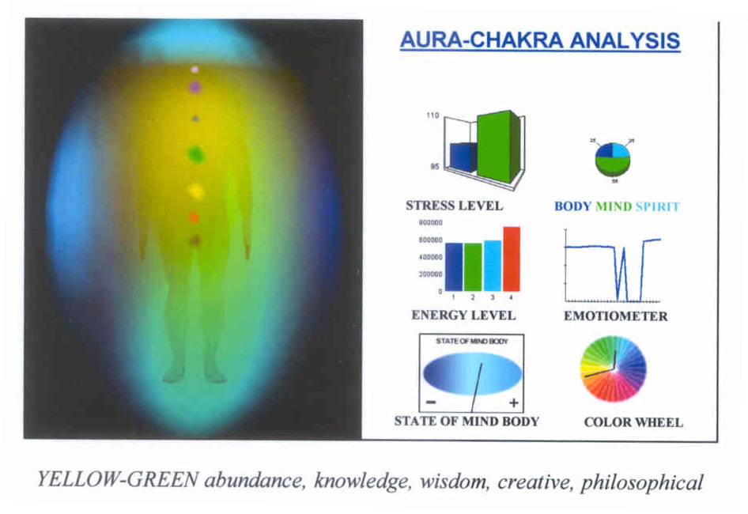
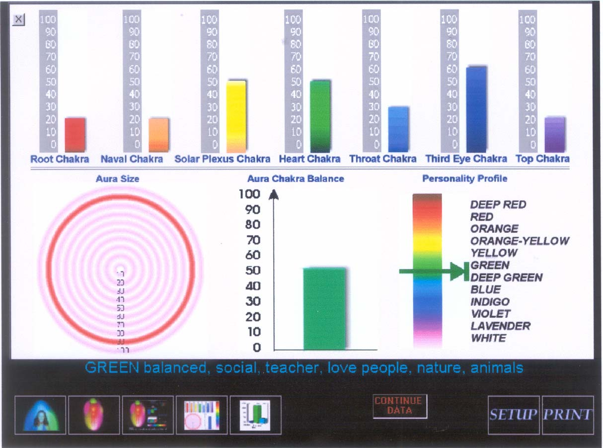

Introduction
GENERAL ANALYSIS OF AN AURA/CHAKRA PHOTO
Just taking a nice aura photo is not enough. The interpretation of the aura photo is the most important part. To read an aura photo you have to consider its many different parts:• The shape of the aura/chakras
• The colors of the aura/chakras
• Their energy positions
• Interpretations of bio-data graphs
The aura is created by our body's vibrations, which the aura camera shows as colors. In other words, the human body's vibrations are visible, as colors. You can also combine the meaning of the aura colors with that of the chakra colors, which are the energy centers in the body. If your vibrations are of a certain color, it means your attention is mainly centered in a particular body area, e.g. if you vibrate in yellow you are sensitive in the stomach area and your 3rd charka is open. You might also be involved in yellow themes like trying to be independent.
WHAT ARE SOME OF THE USES
OF AN AURA/CHAKRA PHOTO?
To be aware of the balance between the mental,
physical, emotional and spiritual energies
To know how to harmonize the yin/yang energies to stay Healthy
To know some of your gifts and talents

Example of Aura-Chakra Picture
Back to top
Aura Color Definitions
Deep-Red Realistic, Grounded, Active, Strong, Will-Power, Survival Oriented Red Active, Powerful, Energetic, Vitality, Competitive, Winner, Sexual, Passionate Pink Loving, Sensitive, Sensual, tender, Artistic, Excited Orange-Red Confidence, Creative Power Orange Adventurous, Courageous, Relates to Reproductive Organs and Emotions Orange-Yellow Analytical Thinker, Creative Intelligent, Scientific, Detail Oriented, Perfectionist Yellow Creative, Intelligent, Playful, Lightness, Optimistic, Easy-going, Relates to the Spleen, Life Energy Gold Wisdom, Inner Knowledge, Spiritual Mind, Intuitive Thinker Yellow-Green Communicative, Creative with Heart Green Teacher, Social, Communicator, Love People, Animals, Nature, Relates to Heart and Lungs Turquoise Healer, Therapist, Sensitive, Peace, Tranquility, Compassionate, Relate to Immune System Blue Caring, Sensitive, Loving, Helpful, Intuition, Love to Help Others, Relates to Throat, Thyroid Indigo Clarity, Calm, Deep Inner Feelings, Love, Seeker, Introverted, Inner Knowing, Authenticity, High Sense of inner Values, Artistic Violet Intuitive, Artisitic, Magical, Futuristic, Idealistic, Relates to Crown, Nervous System, Pineal Gland Lavendar Imagination, Visionary, Daydreamer, Etheric White Spiritual, Transcendant, Higher Dimension, Etheric and Non-physical Qualities
Aura Locations and Chakra Shapes
LEFT SIDE (FEMALE-YIN)
The color on the left side is normally the vibration coming into the being. It is what one feels inside but might not have expressed.
ABOVE HEAD (THOUGHTS-BELIEFS)
The color over the head is what you experience right now. It reflects what one thinks or believes at that moment, and shows the current state of mind.
RIGHT SIDE (MALE-YANG)
The color on the right side is traditionally the energy being expressed, as well as the qualities most likely seen or felt by others. It is what you are putting out to the world.
CENTER (BASE AURA COLOR)
The most dominant aura color is seen in the center of your body. This base aura color helps determine one's personality type and does not change as fast as the outside colors.
DARK, MUDDY OR MULTIPLE AURA COLORS
One might be stressed, tired or experiencing emotional problems; or one may be in a period of tremendous growth and change reflected by several aura colors.
CHAKRAS
The shape, size and intensity of the color of each chakra reflects various physical, emotional, mental and spiritual states within the aura.
ROUND CIRCULAR CHAKRAS SHOW A BALANCED ENERGY SYSTEM
Non-circular, blurred chakrs show an imbalance in one's energy centers. Also look at the color and brightness of each chakra for a more detailed analysis.
Bio-Data Graphs
BIO DATA ANALYSIS
The bio-data graphs and meters titled "Aura/Chakras Measurements" reflect important parts of the energetic body system. The color wheel gives an overview of the complete aura color range. This graph also indicates the yin/yang balance. The short needle reflects the yin-female-left qualities, the long needle the yang-male-right qualities of the energy system.
STRESS/RELAXATION GRAPH
The relaxation graph shows the physical relaxation or stress level, and is mainly based on body temperature. The left blue bar is used as a baseline (environment.) The green bar and left top value show the personal relaxation level.
ENERGY LEVEL GRAPH
The energy level graph shows the different energy channels that are measured, and is based on the electro-dermal activity.
MIND-BODY-SPIRT GRAPH
This mind-body-spirit graph gives an overview of how the energies are distributed between body, mind and spirit.
EMOTIOMETER
The emotiometer shows realtime emotional reactions, true thoughts and inner feelings.
MIND-BODY GRAPH
The state of mind-body graph displays the overall mind/body condition, and is based on the body temperature.
Aura/Chakras Measurements
Some Chakra Definitions
n Chakra position effect Body position Color Effect by activation Theme/learning process 1 Basis or Root Chakra
coccyx between anus and genitals
Life Energy spinal column, bones, legs, intestine, blood Red reinforce life energy, sexual potence, power of enforcement origin: life energy, trust in yourself, relation to material world, stability, vitality 2 Sacral Chakra
3 inches under naval
Creativity & Relationship genitals, kidney, lymphatic system, digestion Orange stimulate creativity, eroticism, appetite and digestion origin: feelings, sensuality, eroticism, creativity, wonder and enthusiasm 3 Solar Plexus Chakra
3 inches above naval
Wisdom liver, stomach, gall bladder nervous system Yellow redeem emotions, helps by depressions, helps to forget bad feelings and experiences development of own personality, process of bad feeling and experiences, influence and decision power, wisdom 4 Heart Chakra
middle of breast
Harmony & Love heart, lung, circulation, skin, hands Green balance mind, body, soul, supports love, compassion, healing communication, creative self expression, development of heart qualities, love, healing 5 Throat Chakra
middle of the throat
Inspiration voice, throat, bronchial, lung Blue active communication, self expression and independence frankness, compassion, tolerance & forgiveness, unselfishness, devotion, inspiration, access to the finer levels of existence 6 Brow Chakra
forehead
Intuition nose, eyes, ears, face brain Violet stimulates mind power spiritual power, development of inner power, knowledge, intuition, projection of will, imagination 7 Crown Chakra
middle of the head
Spirituality cranium, brain White activates spiritual growth, self-realization perfection, union with the universe, universal awareness